Once a payload exists, checking whether the interchange's own bookkeeping is honest — and why “fatal” stops meaning what it meant three notes ago.
This is the fifth act of the x12-tidy method, and the first one to reach the values rung of the method's ladder — shape, delimiters, structure, values: not just “is this shaped like a segment,” but “does what this segment claims about itself hold up.” The previous note ends with one payload and a raw list of segments. This one is about walking that list once and checking whether the envelope it describes is actually true.
Every earlier note treats fatal as a stop signal: the
delimiters can't be trusted, so parsing halts there and reports why.
Envelope QA/QC inverts that, and says so in its own module docstring:
fatal is a display/trust
signal (‘don't use this payload’), never a stop signal:
every check below always runs to completion, on every segment,
regardless of what's found.”
A missing SE, a control number that doesn't match its
trailer, a functional group closed twice — none of it stops the
walk. The walker keeps going, because the alternative is worse: stop at
the first broken envelope and every finding after it goes unreported,
which is exactly the “fails on the first deviation” failure
mode this whole tool exists to avoid.
A single walk over .segments drives every check. It
tracks, at any moment, at most one open functional group and —
inside it — at most one open transaction set.

A missing closer doesn't stop the walk either — it's recovered from by treating the next recognizable boundary as the assumed end:
GE), then opens the new oneSE), then opens the new oneSo a broken envelope doesn't hide the segments inside it — everything nested inside a group or transaction set that never got closed is still walked and still checked, just against a boundary the walker inferred instead of one the sender wrote.
| what | example codes |
|---|---|
| ISA/IEA, GS/GE, ST/SE pairing and nesting | structure.missing-iea, gs.missing-ge, st.missing-se |
| stated counts match the real count | structure.functional-group-count-mismatch, gs.transaction-set-count-mismatch, st.segment-count-mismatch |
| control numbers agree front-to-back, and are unique in scope | structure.control-number-mismatch, gs.control-number-duplicate, st.control-number-duplicate |
| a segment tag begins with an uppercase letter (the A5 gate) | structure.tag-shape-invalid |
GS08 agrees with ISA12 |
gs.version-mismatch |
ISA15 is T, P, or I |
isa.usage-indicator-invalid |
GS07 is X or T — the complete list |
gs.responsible-agency-invalid |
| a segment with no structurally valid place to be | structure.foreign-content |
structure.foreign-content is the catch-all for
“this segment is outside any recognized context” —
before a group has opened, between one group's close and the next
group's open, a closer with nothing open to close, or a second
IEA once the interchange is already closed. It is one code
because it is one shape of problem, no matter which of those forms it
takes.
Deliberately not checked, because no decision has
been made yet: ISA05/ISA07 qualifier codes,
ISA14, GS01, ST01 shape,
date/time format, TA1, BIN/BDS,
and more than one interchange in a single file. Silence on these is not
an oversight — see
design.md
for what's decided and what's parked.
Sender and receiver ID, the usage indicator, how many groups and
transaction sets and segments were found — none of that is a
finding. It's reported either way, the same instinct behind
the method's treatment of
ISA11: which value is present is information, reported,
not a defect — only an unusable value is.
EnvelopeFacts — src/x12_tidy/qaqc/envelope.py
@dataclass
class EnvelopeFacts:
sender_qualifier: bytes
sender_id: bytes
receiver_qualifier: bytes
receiver_id: bytes
interchange_date: bytes
interchange_time: bytes
interchange_version: bytes
usage_indicator: bytes
group_versions: tuple[bytes, ...]
functional_group_count: int
transaction_set_count: int
segment_count: int
Diagnostic stays severity-free — code, message,
offset, nothing more, per
the
diagnostic model. EnvelopeFacts is a second, plain
dataclass for exactly the things that are true about an interchange
regardless of whether anything is wrong with it. QaQcResult
carries both: a payload that fails every check in §3 still gets its
facts extracted, because knowing who sent a broken file is not
conditional on the file being clean.
GS08 (Version/Release/Industry Identifier Code) is
supposed to agree with ISA12 (Interchange Control Version
Number), but real senders don't write them the same way: ISA12
is 00401; a conformant GS08 is
004010; a common real-world GS08 is
4010 with the leading zeros dropped; a HIPAA GS08
might be 005010X222A1 with an industry suffix
ISA12 never carries. The check strips leading zeros from
both sides and checks one starts with the other:
the version check
isa12_stripped = self._isa12.strip().lstrip(b"0")
gs08_stripped = gs08.strip().lstrip(b"0")
if not gs08_stripped.startswith(isa12_stripped):
# gs.version-mismatch
This is a heuristic, named as one. It tolerates the real-world
conventions it was written for — dropped leading zeros, an
appended industry suffix — and nothing more. It is not a lookup
table of every legal ISA12/GS08 pairing, and a
value that strips down to something very short could in principle match
more than it should. No such case has turned up in the corpus this
ships with; if one does, it belongs here, named, the same way every
other tolerance in this tool is.
The per-case tests mirror
the earlier notes: one
deviation, one expected code, run against a fully-assembled payload
instead of a bare ISA line — a missing SE, a
duplicated GS06, a lowercase tag, a version mismatch, and
so on, one test each.
Writing them surfaced a real gap the way
the delimiter sweep once did. Every closer the walker can see reopened
out of turn — a second GS before GE, a
second ST before SE — was already
guarded and diagnosed. IEA was not: the code simply
overwrote self._iea_elements on a second sighting, so
the case that slipped through
...GE*1*1~IEA*1*000000001~IEA*1*000000001~
came back was_clean == True. Two interchange trailers,
byte-identical, passed silently — not because the numbers happened
to match, but because nothing was checking for a second
IEA at all. The fix treats a repeat sighting the same way
every other repeat closer is treated: foreign content, the
interchange is already closed, filed under the same
structure.foreign-content code as every other
“nothing here should be structurally valid” finding.
.segments still assumes exactly one interchange per file
— a file that is really two interchanges concatenated has its
second ISA/GS/IEA read as
ordinary body content of the first, which this walker correctly flags
as foreign content without knowing why it's foreign. Fixing
that means teaching
the assembly step to
find more than one interchange boundary, not this one to guess harder.
It's tracked, not fixed here.
x12_tidy.tidy.tidy(dirty: bytes) -> TidyResult is the
whole-package entry point once both steps exist:
reassemble, then audit,
one combined diagnostic list, cleanse findings first.